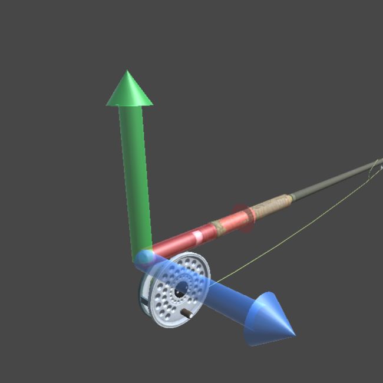

What does eFly measure
The figure shows the rod under the load of the cast forward. The correctly positioned eFly sensor is represented in red and the rod deflection in green. As you can see, the position of eFly is such that it is hardly affected by the inflection of the rod. Therefore all the inertial values measured describe what happens at the level of the handle of the rod. What happens to the tip of the rod can only be hypothesized but not measured. However, this does not constitute a limitation as the actions and reactions are transmitted and received by the sensor in the vicinity of the angler that generates the movement. In short, eFly is the recorder of the actions generated by the fisherman and not of the effect that these actions produce on the line. With eFly it is therefore possible to know what are the kinematic characteristics of the movement of the rod which in turn are the result of the player's action and the inertial reactions of the rod and line.
Now let's see what are the quantities that eFly is able to measure, their units of measurement and their meaning.
Angles
Angles are measured in degrees and are defined as we have already seen above.
Through the three angles it is possible to express the position of the rod at any moment of the cast. The most important of the three (primary or frontal angle) is the one that expresses the orientation of the rod with respect to the horizontal position with the tip towards the target. The zero angle corresponds to the horizontal position of the rod, 90 degrees correspond to the vertical and so on. The time convention is also used for angles.
Front Angle
The horizontal direction (zero degrees) is conventionally made to coincide with 9 o'clock. The vertical position (ninety degrees) with 12 o'clock.
| Degree | Hour |
|---|---|
| 0 | 9 |
| 30 | 10 |
| 60 | 11 |
| 90 | 12 |
| 120 | 1 |
| 150 | 2 |
| 180 | 3 |
Side Angle
The target direction (zero degrees) is conventionally made to coincide with 12 o'clock. The right direction (minus ninety degrees) with 3 o'clock.
| Degree | Hour |
|---|---|
| -90 | 9 |
| -60 | 10 |
| -30 | 11 |
| 0 | 12 |
| 30 | 1 |
| 60 | 2 |
| 90 | 3 |
The side angle must be zeroed on the direction of the target. There are two options to do this: 1) Bring the rod to the horizontal position of rest and oriented towards the target (front angle and pole angle close to zero). By maintaining this position without the absolute value of the front and pole remaining below three degrees, after about three seconds the current direction taken by the rod is assumed as the direction of the target. 2) Take the direction of target and press button 1.
Pole Angle

The reel vertical direction (zero degrees) is conventionally made to coincide with 6 o'clock. The left position of the reel (ninety degrees) with 9 o'clock.
| Degree | Hour |
|---|---|
| 90 | 9 |
| 60 | 8 |
| 30 | 7 |
| 0 | 6 |
| -30 | 5 |
| -60 | 4 |
| -90 | 3 |
Angles Rate
Angle eate or angular velocity is measured in degrees per second and expresses the rate of change of the angle. The value of the angular velocity is directly related to the peripheral velocity of the rod pole. As you go up towards the tip, the peripheral speed undergoes a delay which is greater the greater the flexibility of the rod. With any rod, the instant of maximum speed of rotation does not coincide with the instant of maximum speed of the tip. The latter is always delayed by a few degrees (and moments).
The difference is quite small for properly balanced rod-line systems. For considerations we can, with a good approximation, say that the point of maximum frontal speed in the back must be close to 1 o'clock, in the down close to 11 o'clock.
Accelerations

The linear acceleration measured by eFly is referred to the reference system of the sensor shown in the figure. The trend of the accelerations is directly linked to the forces that the angler exerts on the rod and to the inertial reactions of the rod itself. During the casting action the directions of the frontal and vertical accelerations change continuously and it is interesting at what moments the force is exerted.
When reading the acceleration graphs it is important to remember that the measurement reference system is integral with the rod, as shown in the figure.
Data Acquisition
 The home page allows access to the two main functions of the system: data acquisition and their consultation.
The home page allows access to the two main functions of the system: data acquisition and their consultation.
The data acquisition is done through the use of the live page.
Each movement of the sensor is mapped to the numerical values and graphs of eFly. Let's explore the different features. With the sensor mounted correctly on the rod (screen facing the angler and aligned vertically), we see that the 3D model of the rod on the right side of the screen faithfully traces the movement of your rod. Before introducing the graphs of the single values, let's define the reset criterion of the launch direction. The angler can freely change the direction of launch to launch. That is, there is no predefined direction in which to throw. At each launch, however, it is necessary to wait for the system to acquire the reference direction. To do this it is necessary to keep the barrel horizontal and frm for a few seconds. The system assumes this condition as a reset signal and the rod model on the 3D interface is aligned upwards. This means that the current direction of the rod is taken as the casting direction. Exactly as shown in the figure.
From this position it is possible to start exploring the various movements. The lifting of the tip upwards determines the variation of the front angle. The 3d model moves accordingly. The numerical value and the hourly table vary accordingly; the front angle graph is on top of the horizontal line. The side and pole angles are also controlled in the same way. We suggest that you familiarize yourself with the graphs and their numerical values before starting the data acquisition.
With the vertical scrollbar, the graphs of the normal speeds and accelerations are also made completely visible. Also for these it is good to familiarize yourself with the graphs on the basis of controlled movements of the rod. The sign of the angular velocities is the same as for the angles. For example, the positive angular velocity of the front corner is the one that brings the tip upwards, of the side angle it is the one that brings the tip to the right. The angular velocity of the pole angle is that which causes the rod axis to rotate clockwise.